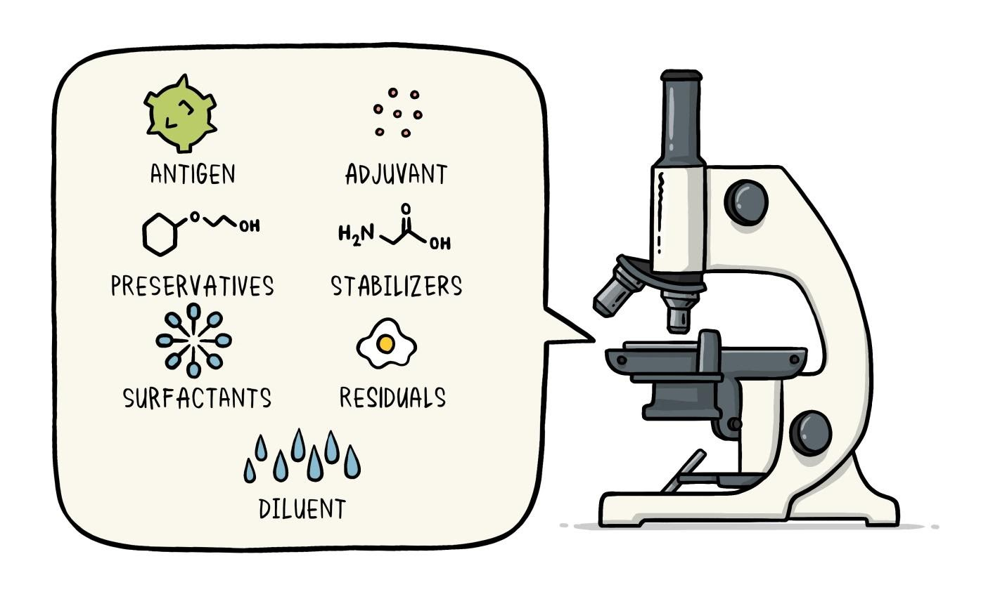
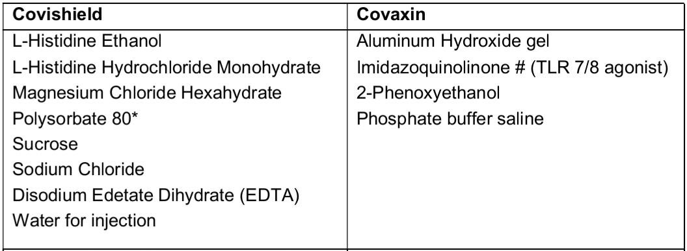
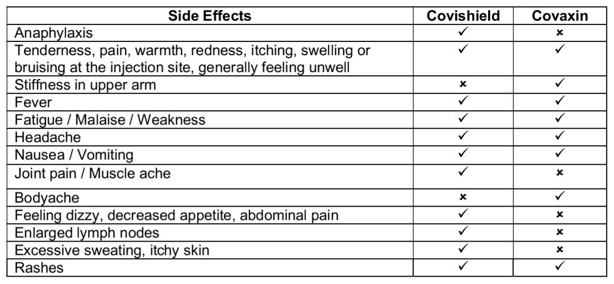

What is a vaccine?
Vaccine: A product that stimulates a person’s immune system to produce resistance to a specific disease, protecting the person from that disease.
Vaccines are products that help prevent disease. They do this by preparing the body for exposure to disease-causing organisms.
What is the COVID-19 vaccine?
The COVID19 vaccine is a vaccine intended to provide acquired immunity against severe acute respiratory syndrome coronavirus 2 (SARSCoV2).
What does a vaccine contain?
- All vaccines contain an active component (the antigen similar to the organism) which generates an immune response.
- Preservatives prevent the vaccine from becoming contaminated
- Stabilizers prevent chemical reactions from occurring within the vaccine and keep the vaccine components from sticking to the vaccine vial.
- Surfactants keep all the ingredients in the vaccine blended together.
- A diluent is a liquid used to dilute a vaccine to the correct concentration immediately prior to use.
Vaccines are developed in 3 phases before they are used for the population.
Content of COVID-19 vaccines in India:
Biological Components:
Covishield is a viral vector vaccine. It uses a weakened, non-replicating strain of Chimpanzee cold virus (adenovirus) to carry genetic material of the spike protein of SARS-CoV-2 into human cells.
Covaxin contains an inactivated SARS-CoV-2 (Strain: NIV-2020-770) which is disabled for replication. However, the proteins are intact which are able to provoke immunity of the host.
Chemical Components:
Types of covid-19 vaccines available in India:
There are mostly 3 types of vaccines available in India as of now
- COVAXIN
- COVISHIELD
- SPUTNIK V
Why is vaccine needed?
Benefits of taking the vaccine:
The virus that causes COVID-19 repicates quickly. Without the vaccine, your body has to identity the virus, learn how to fight it and carry out an immune response. In the meantime, the virus can replicate to a level beyond what your immune system can handle- which means you feel sick.
With the vaccine, your body can very quickly identify the virus and skip straight to starting its immune response.
Vaccine is intended to provide acquired immunity to person and reduces the severity of the disease.
Dose:
Covishield & Covaxin both have a 2 dose regimen
The schedule of Covishield vaccine under National Covid-19 Vaccination Strategy is to administer the 2nd dose at 12-16 weeks interval (i.e. after 84 days), after administration of 1st dose.
Whereas, the period for Covaxin has remained the same i.e. 4-6 weeks for the 2nd dose.
Vaccine after covid:
Yes, you should take the vaccine even if you had covid in the recent past after 3 months of clinically recovering from it and checking for covid antibodies values.
If you had your 1st dose and then had contracted COVID infection then you should get the 2nd dose after 3 months and after checking for covid antibody values.
However, people who were treated for COVID-19 with monoclonal antibodies or convalescent plasma should wait 90 days before getting a COVID-19 vaccine.
Who should/shouldn’t get the vaccine?
Vaccine has been advised for anyone above 18 years of age. Children below 18 years should not take the vaccine as of now. Stay updated with the lastest news about vaccination in children from this link.
Vaccine for children is under research currently in will be available soon.
Who can take the vaccine?
Who must avoid taking the vaccine?
- Everyone above 18 years of age
- Women on their menses can take the vaccine and there is no evidence of vaccine affecting fertility
- The vaccine is safe and effective in people with chronic diseases including hypertension, diabetes, asthma, pulmonary, liver, or kidney disease, as well as chronic infections that are stable and controlled
- People with severe allergic reactions to foods, oral medications, latex, pets, insects and environmental triggers can get vaccinated
- History of allergies
- Severe allergic reaction after a previous dose of this vaccine
- Severe allergic reaction to any ingredient of the vaccine
- Active COVID-19 infection or people recently diagnosed of COVID-19
- Fever
- Bleeding disorder
- Received another Covid-19 vaccine
- Serious health issue detected by vaccine shot supervisor
- Immune-compromised / people with Autoimmune conditions
- If you're on a medicine that affects your immune system
- Pregnant
- Breastfeeding
- Are under 18-years-old
- Mentioned medical conditions and supervisor says 'no'
- Not sure and may prefer to consult your healthcare provider
The person who was recently diagnosed with COVID-19 can get the first dose four weeks after onset of symptoms or a positive test (whichever is earlier). The second dose may be received after the completion of the isolation period. The isolation period may be counted for 10 days with no fever and an improvement in symptoms.
Do's & Don'ts after taking the COVID-19 vaccine:
Many studies agree that fully vaccinated people are less likely to be infected without showing symptoms (called asymptomatic infection) and potentially less likely to spread the virus that causes COVID-19 to others. However, further investigation is ongoing.
Do's
Don'ts
- Wait for 30 minutes at the vaccination centre after vaccination for observation.
- Take rest for 1- 2 days.
- It is ok to develop fever, bodyache, and weakness after the vaccine. It shall subside on its own.
- Consult a doctor if side effects continue for more than a week.
- You should take both the doses of the same vaccine only.
- Collect or download your vaccination certificate after the second dose.
- Follow COVID-19 precautions even after vaccination.
- Stay hydrated & have a well balanced meal.
- Do not take the vaccine if you are currently suffering from COVID.
- Do not go empty stomach for vaccination.
- Don't take painkillers afterwards for mild symptoms.
- Don't miss the second dose.
- Avoid heavy exercise for 2 to 3 days after the vaccination.
- Do not remove your mask at the vaccination centre.
What to expect after taking the vaccine?
Is the COVID-19 vaccine safe?
Vaccination is the safest, most effective, and most reliable way to keep yourself, your family, and your community healthy and safe from COVID-19.
COVID-19 vaccines are highly effective and have undergone rigorous safety testing. Thanks to advances in medicine, scientists were able to create and test a vaccine quickly. The Food & Drug Administration (FDA) requires rigorous safety testing before it will authorize any vaccine.
Take your vaccine shot at the earliest. Choosing to take one or the other is not that important as taking a vaccine against COVID-19.
When you take a vaccine, you will be protected & any severe disease form will be prevented.
For more information regarding vaccination visit this link.